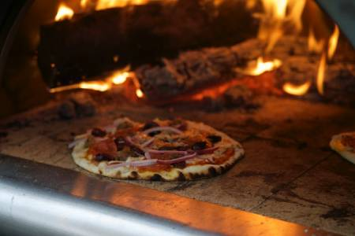

Tools of the Trade
Tools, tools. The all important tools.
The primary tools that can be used for pizza that I recommend would be a pizza peel (the big spatula looking thing), a scale for weighing ingredients, dough cutter and bowl scraper, and most importantly would be a pizza stone or steel.
The pizza peel is a very useful tool, especially if you are in a busy kitchen with several different processes in motion. Once the dough has been rolled out, it can be placed directly on the peel and the pizza can be built directly on it. When it is ready to place in the oven, it can be safely "launched" there with the peel. The peel also allows the baker to remove the pizza quickly from the baking area.
The pizza cutter is also an important tool, and I currently recommend the long bladed rocking cutter. It makes cutting the pizza fast with less mess.
Last, but importantly would be the pizza stone. Or even better, would be the revolutionary Baking Steel product. The cooking method is what can simply make you pizza better than what a person would expect. This technique uses the oven broiler to create a charred effect of wood fired pizza. It works best with two baking steels, but will also work with two pizza stones. The basic concept is to preheat the oven at 500 degrees for one hour with two steels or stones, then when the pizzas are ready to bake the oven is placed in broil mode. The pizza is launched for baking on the upper steel or stone. This intense heat will mimic a wood fired oven or brick oven from a pizzeria. Be ready for great tasting pizza!